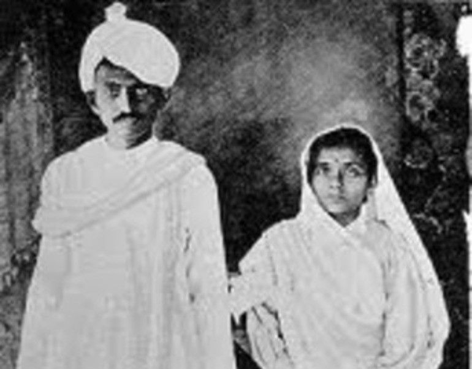
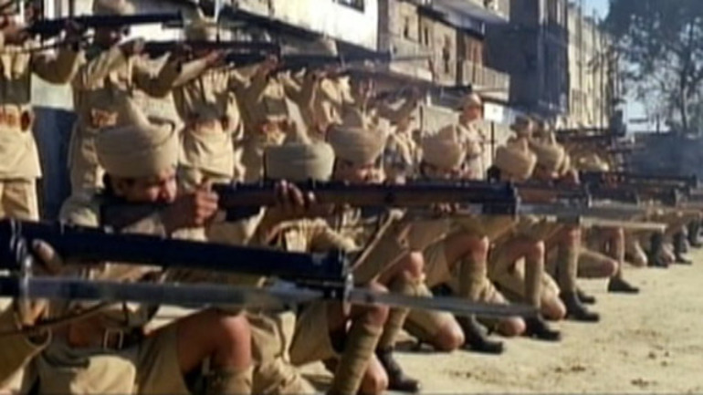
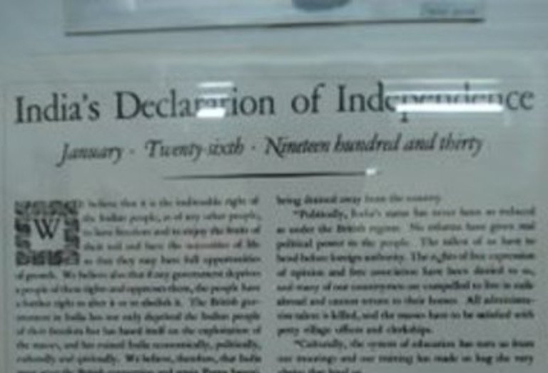

Time line
Short Biography of Gandhi
Oct 1869
Birth
Birth

May 1883
Marriage
Marriage

Sep 1888
Law School
Law School
Apr 1893
South Africa
South Africa
Jul 1907
Satyagraha
Satyagraha

Jan 1908
Gandhi goes to Jail
Gandhi goes to Jail

Apr 1919
Amritsar Massacre
Amritsar Massacre

Aug 1920
Nonviolent Resistence
Nonviolent Resistence

Jan 1930
Declaration of Independence
Declaration of Independence

Mar 1931
Salt March
Salt March

Sep 1932
Fasting
Fasting

Aug 1942
Indian National Congress
Indian National Congress

Jun 1944
Gandhi visits Muhammed Ali Jinnah
Gandhi visits Muhammed Ali Jinnah

Aug 1947
Indian independence
Indian independence
Sep 1947
Fighting between Hindus and Muslims
Fighting between Hindus and Muslims
Jan 1948
Gandhi's Death
Gandhi's Death

"When I despair, I remember that all through history the way of truth and love have always won. There have been tyrants and murderers, and for a time, they can seem invincible, but in the end, they always fall. Think of it--always."